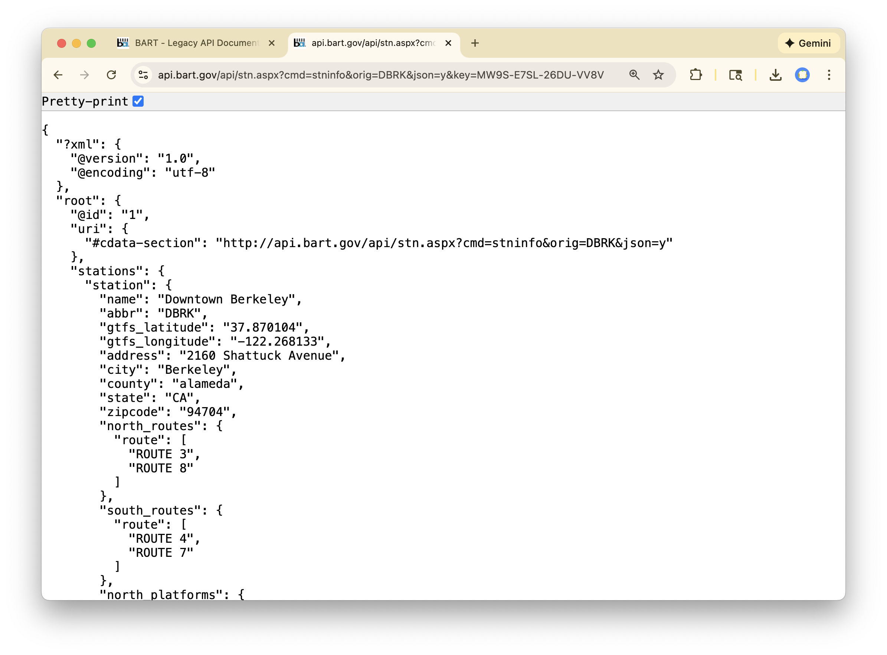
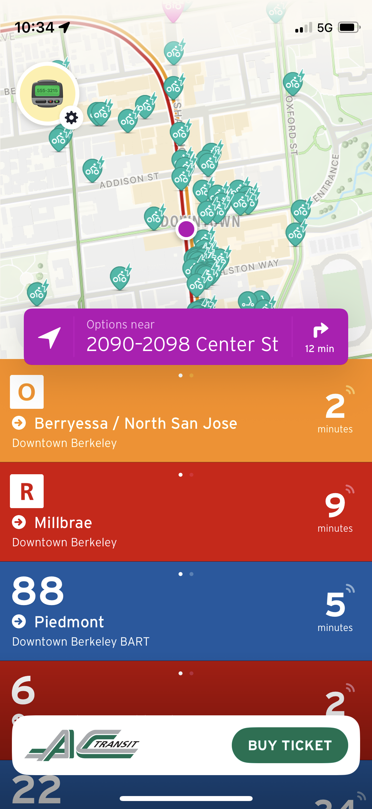
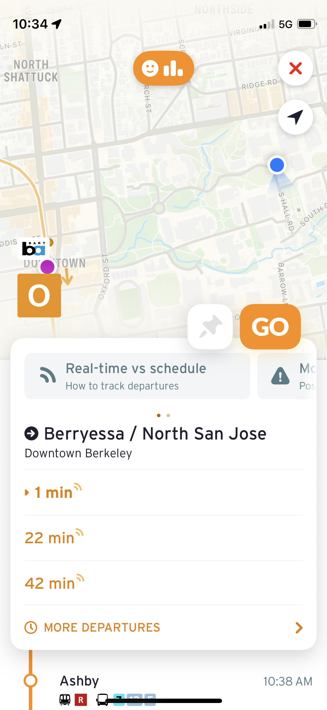
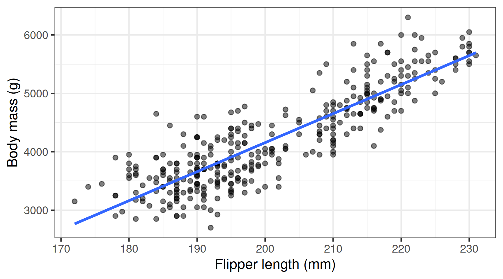
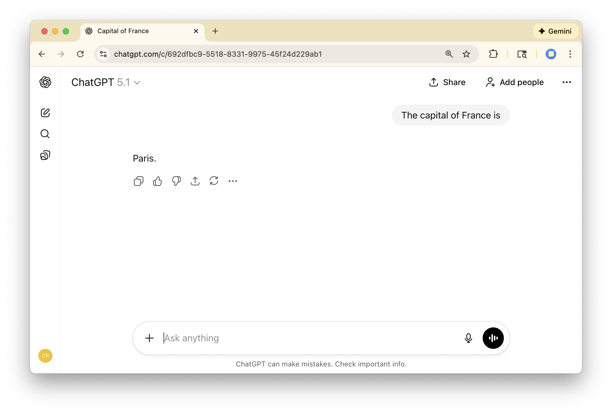
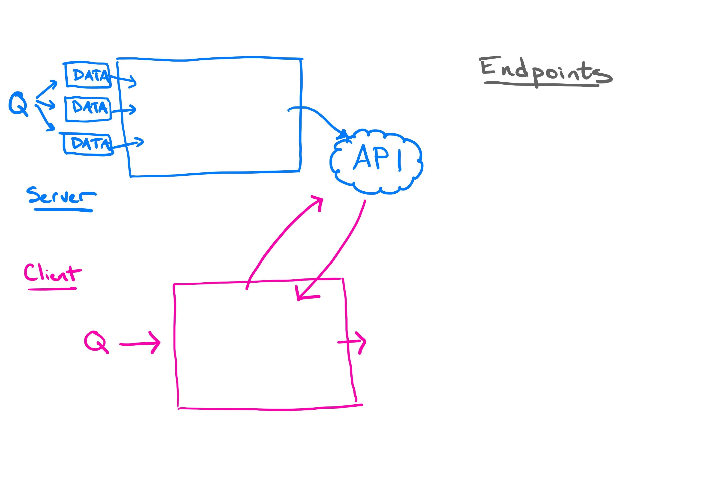
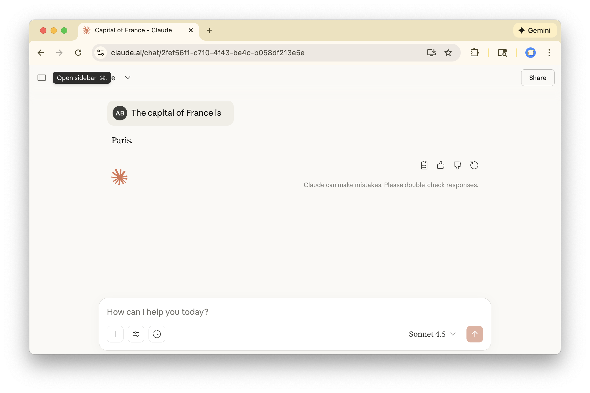
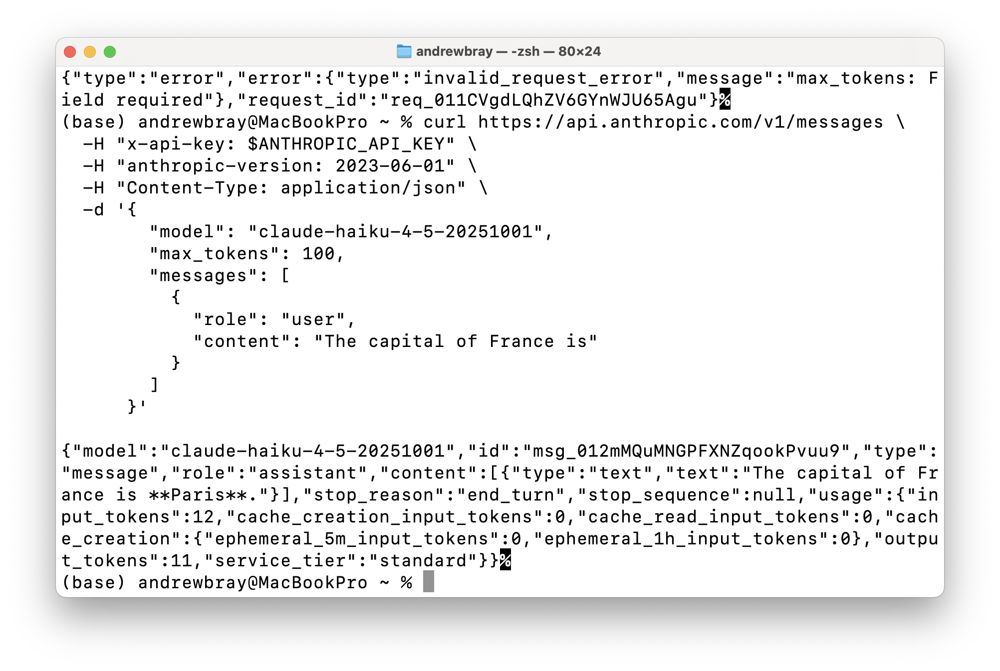

LLMs
Predictive Models through an API
Last Time
- An endpoint is a function the server runs.
- Plumber annotations turn R functions into endpoints.
- A serializer sets the format of the response.
- GET sends data in the URL; POST sends it in the body.
Key Ideas for Today
- An LLM predicts the next token.
- It learns its probabilities from vast text.
- A chat app is a client of an LLM’s API.
- Send a prompt from the shell or from R.
Review
Examples so far
How are APIs different?
- Modularizes part of computational workflow to run on dedicated (powerful) server.
- Functionality called by client through a simple interface: HTTP request.
- Anyone with internet can use it.
- Any software with internet can use it.
- No need to install complex software locally.
Example: BART Arrivals
Server: BART API server.
Client: Me, on my phone.

Example: BART Arrivals
Server: BART API server.
Client: Me, on the Transit App.

Example: BART Arrivals
Server: BART API server.
Client: Me, on the Transit App.

Example: Stat 133 Guestbook
Server: My laptop, running the Plumber API.
Client 1: You, on the sign-in page on your phone.
Client 2: An R script using httr2.
A model learned from data

A predictive model is a rule learned from data: 342 penguins in, one line out.
\[\widehat{\text{body mass}} = -5781 + 49.7 \times \text{flipper length}\]
Serving the model
Added to stat133-api.R:
# Fit once, when the API starts
penguin_model <- lm(body_mass_g ~ flipper_length_mm,
data = penguins)
#* Predict a penguin's body mass from its flipper length
#* @param flipper Flipper length, in mm
#* @get /predict
function(flipper = 200){
new_penguin <- tibble(flipper_length_mm = as.numeric(flipper))
list(body_mass_g = predict(penguin_model, new_penguin))
}/predict?flipper=200 returns {"body_mass_g":[4156.2819]}
How an LLM works
Informal Next Word Prediction
- I will show you three sentences, one at a time, each one with a missing word.
- You will have 3 seconds to predict the next word that best completes the sentence.
- Here, “best” means the word that is most likely to appear next, given the words that came before it, when you look at all text on the internet.
Token
A unit of text that a model reads and writes: a word, a piece of a word, or a punctuation mark. One token is roughly four characters of English.
Large Language Model (LLM)
A model that predicts the next word (or token) \(w_n\) given the sequence before it, \(w_1, w_2, \ldots, w_{n-1}\), by estimating the probability distribution \(P(w_n | w_1, w_2, \ldots, w_{n-1})\). It learns these probabilities by training on vast amounts of text data.
Guess the Metaphor
An LLM is like a printing press: it has cases of type (tokens) and sets them one at a time, each drawn according to how often it came next in everything ever printed.
LLMs through an API
Example: ChatGPT
Server: OpenAI API server.
Client: Me, on the ChatGPT App.


Example: Claude
Server: Anthropic API server.
Client: Me, on the Claude.ai App.

Example: Claude
Server: Anthropic API server.
Client: Me, at the terminal.

Keep the key out of your code
Store it in an environment variable: a named value that the shell or R holds for the session.
In the shell:
Me, at the terminal
The prompt is the text we send: the content of the message.
The response
{
"model":"claude-haiku-5-5",
"id":"msg_011Ch17KKE8Ut9fN6N5ufjvu",
"type":"message",
"role":"assistant",
"content":[{"type":"text","text":"Paris."}],
"container":null,
"stop_reason":"end_turn","stop_sequence":null,"stop_details":null,
"usage":{
"input_tokens":14,
"cache_creation_input_tokens":0,"cache_read_input_tokens":0,
"cache_creation":{"ephemeral_5m_input_tokens":0,"ephemeral_1h_input_tokens":0},
"output_tokens":6,
"output_tokens_details":{"thinking_tokens":0},
"service_tier":"standard","inference_geo":"global","speed":"standard"},
"diagnostics":null
}The ellmer R package
What it does:
- Simplifies making requests to the many LLM APIs.
- Handles authentication and response parsing.
- Offers functions for common tasks.
Me, in R
I’ll demonstrate with Claude:
chat_claude() reads the key from the ANTHROPIC_API_KEY environment variable, the same one curl used.
Key Ideas for Today
- An LLM predicts the next token.
- It learns its probabilities from vast text.
- A chat app is a client of an LLM’s API.
- Send a prompt from the shell or from R.
For Next Time
- PS 6 due 11/14.
- Sign up for Quiz 6 (11/16-11/17).
- Next time: LLMs inside your IDE.